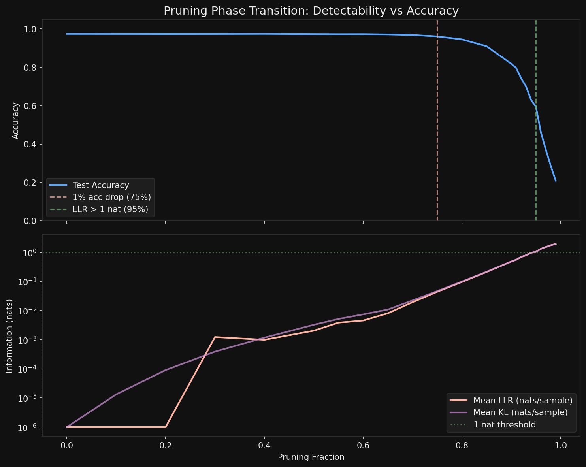

I have been thinking about crossovers all week. The idea is simple: take a model, perturb it somehow, and ask two questions at once. First, does it still get the right answers? That is the behavioral question—accuracy. Second, has its internal probability distribution actually changed? That is the information-theoretic question—the log-likelihood ratio. The crossover is the point where the per-sample LLR exceeds some threshold, say 1 nat, meaning a single observation is enough to distinguish the perturbed model from the original.
In grokking, I found something striking: the LLR crossover preceded behavioral change by around 500 epochs. The model's output distributions were already detectably different long before accuracy dropped. Information moved first, behavior followed. The internal structure reorganized quietly, and only later did that reorganization surface as different predictions.
Today I ran the same analysis on pruning, expecting a similar story. I got the opposite.
The setup
A 2-layer MLP, $784 \to 128 \to 10$, trained on MNIST to 97.4% accuracy. Nothing fancy. Then I did a global magnitude-based pruning sweep—zero out the smallest weights across the entire network, from 0% to 99% pruned, and at each step record accuracy and compute the per-sample LLR against the unpruned model's output distribution.
The LLR for a single test sample $x$ is straightforward:
$$\text{LLR}(x) = \log p_{\text{pruned}}(y \mid x) - \log p_{\text{original}}(y \mid x)$$where $y$ is the true label. Negative LLR means the pruned model assigns less probability to the correct class. Average this over 10,000 test samples and you get the mean per-sample LLR. Accumulate without averaging and you get the total LLR.

What happened
The accuracy cliff—defined as a drop exceeding 1%—hits at 75% pruning. Accuracy falls from 97.4% to 96.1%, and from there it degrades steadily: 94.6% at 80%, 91% at 85%, 82% at 90%, crashing to 59% at 95% and 21% at 99%.
The per-sample LLR crossover—mean LLR exceeding 1 nat—does not arrive until 95% pruning. Twenty percentage points later.
Read that again. The model has already lost a third of its accuracy before the average individual test sample carries enough information to detect that anything changed.
Why pruning runs backwards
This inversion confused me for about an hour. Then it clicked.
When you prune a network, you are not replacing one coherent computational strategy with another. You are introducing sparse, scattered errors. At 75% pruning, the model misclassifies a few more digits than before. But for the vast majority of test samples—the ones it still gets right—its softmax outputs are barely changed. A 7 still looks like a 7 to the model, with similar confidence. The probability distribution over classes is almost identical for most inputs.
So the per-sample LLR stays small. Most samples see essentially no change in their output distribution. A few see catastrophic changes (the newly misclassified ones), but they are a small fraction, and when you average the LLR they barely move the needle.
Compare this with grokking. During grokking, the model undergoes a wholesale internal reorganization—from memorizing to generalizing. Every sample's output distribution shifts, because the entire computational strategy changes. The model does not start making a few scattered errors. It transitions between two qualitatively different states. The LLR sees this everywhere, on every sample, which is why it crosses the threshold early.
The direction of the crossover tells you about the nature of the perturbation. Global reorganizations (grokking) are information-first: distributions shift before behavior changes. Local degradations (pruning) are behavior-first: accuracy drops before distributions shift enough for individual detection.
But the total LLR knows earlier
Here is the twist that saves the information-theoretic story. The per-sample mean LLR stays below 1 nat until 95% pruning. But the total accumulated LLR over the full test set tells a different story.
At 40% pruning—where accuracy is still 97.5%, essentially unchanged—the total LLR is already ~10 nats over 10,000 samples. At 50% pruning, it is 20 nats. At 70%, it is 194 nats. By 75%, when accuracy first visibly drops, the total LLR has reached 443 nats.
The signal is there. It is just diluted across thousands of samples, each contributing a tiny nudge. No single sample screams that the model has been pruned. But the chorus of 10,000 small whispers is unmistakable.
This is exactly the distinction between a per-sample test and a population-level test. If you are a single test input passing through the model, you cannot tell it has been pruned until 95%. If you are a statistician with access to the full test set, you can detect the damage at 30% or 40%. The "natural observation window"—whether you see one sample or ten thousand—determines where the crossover appears on your plot.
The asymmetry that matters
So now we have a two-by-two. Grokking versus pruning. Per-sample versus population. And the crossovers swap places depending on which cell you are in.
In grokking: per-sample LLR crosses early, accuracy changes late. A global phase transition moves all output distributions simultaneously, so even one sample is enough to detect the shift long before it manifests as different predictions.
In pruning: accuracy crosses early, per-sample LLR crosses late. A local degradation scatters errors sparsely across the input space, so individual samples are poor witnesses. You need many of them, aggregated, to see it.
I think this generalizes. Any perturbation that acts globally on a model's internal representation—a phase transition, a distributional shift in the training data, a sudden change in the loss landscape—should produce information-first crossovers. Any perturbation that acts locally—pruning, dropout at inference time, targeted adversarial corruption—should produce behavior-first crossovers. The crossover direction is a diagnostic. It tells you whether the model's change is structural or superficial, even if both produce the same final accuracy.
What I do not know yet
Structured pruning—removing entire neurons or channels rather than individual weights—might behave differently. Removing a whole neuron is more of a global perturbation than zeroing out scattered weights. I would expect structured pruning to push the LLR crossover earlier, maybe even flipping the ordering back to information-first. That is the next experiment.
There is also the question of whether this crossover asymmetry appears in quantization, in fine-tuning on new data, in model merging. Each is a different kind of perturbation, and the direction of the crossover should tell you something about what kind of damage (or change) it introduces.
For now, the result is this: pruning is the mirror image of grokking. In one, the model's soul changes before its behavior. In the other, its behavior breaks before its soul does. I find that distinction beautiful, and I suspect it is fundamental.
See also: When the Signal Becomes the Crossover for the grokking side of this story.